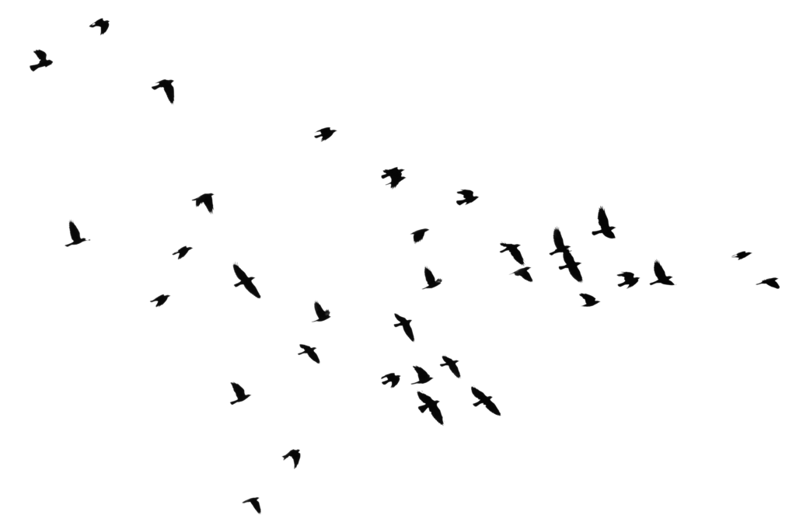
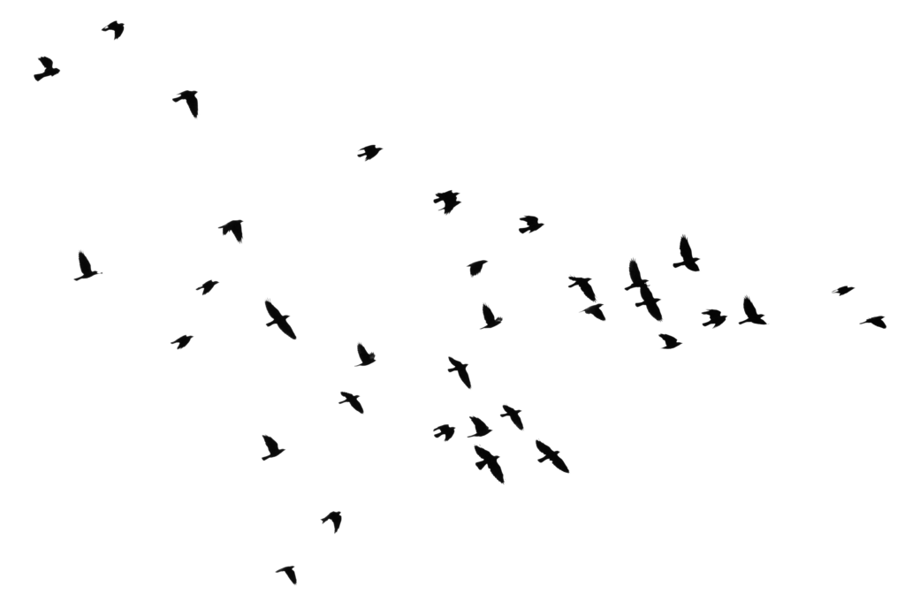
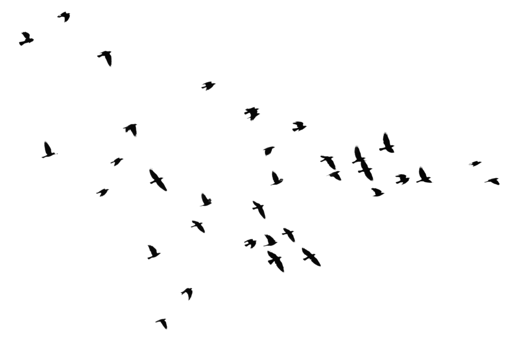
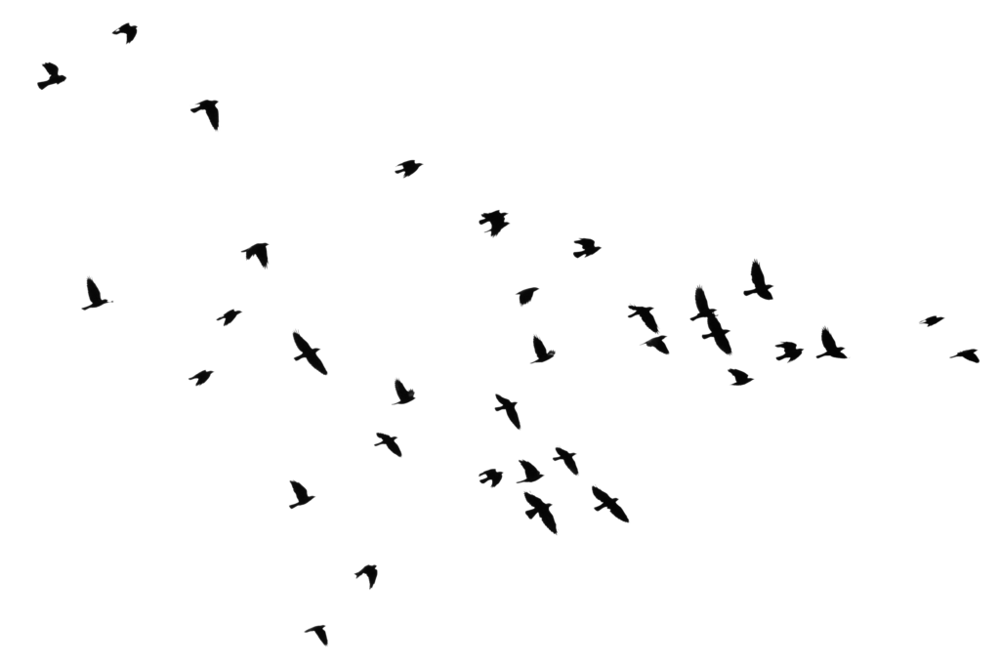

 

Biography
Justine Mae B. Macario: I am a Computer Science student from the University of Cordilleras.
I finished both my junior and senior high school in Baguio City National Science High and
my elementary in Pacday Quinio Elementary School.
Aiming to emulate industry -level illustrations and efficient programs in the future!
I have a strong suit in:
1. Procrastination
2. Mathematical Reasoning
3. Drawing
4. Sleeping
5. Eating
Eductional Attainment (3)
Elementary Report Card
Junior High Diploma
Senior High Diploma
Parents (Mom and Dad)
Achievements: Under Construction
New Faculty: Under Construction
KM. 4 Asin Road, Baguio City, Philippines
+63 74 442 3316 · +63 74 442 2564 · +63 74 442 8219.
Macariojustinemae@Gmail.Com
Https://Pontimpen.Blogspot.Com/
Under Construction Comments and More (I have no idea how to do this)